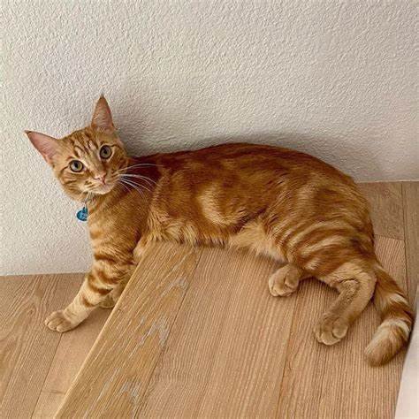

ITS News
Oyen, Si Kucing Oren Informatika, Berhasil Melakukan Jungkir Balik
Rabu, 23 Oktober 2024, 14.00 WIB
ITSNews.com - Pada hari senin (20 Oktober 2024) warga informatika mengabarkan terlihatnya penampakan Si Oyen yang sedang berusaha jungkir balik. Setelah 2 Jam, Oyen berhasil jungkir balik